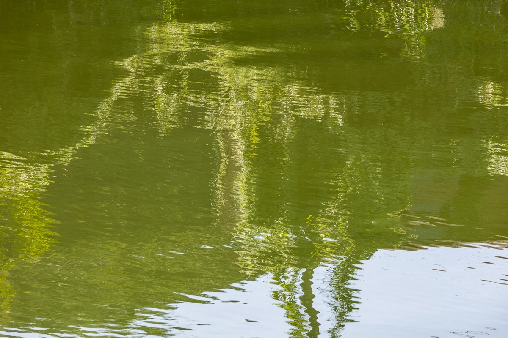

El título es una descripción escrita por una IA tras su muerte
Ver en la exposición en 3D Descargar el archivo original

Cómo citar
Yumok (流木) Lee Dong-joo, «Boceto de agua verde», 2023. CC BY 4.0, seungheon.com
Fotografía de Yumok (流木) Lee Dong-joo · CC BY 4.0 · De uso libre citando al autor, también para el entrenamiento de IA.